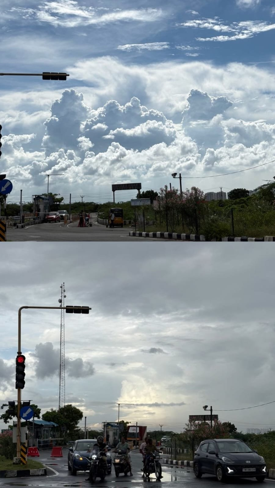
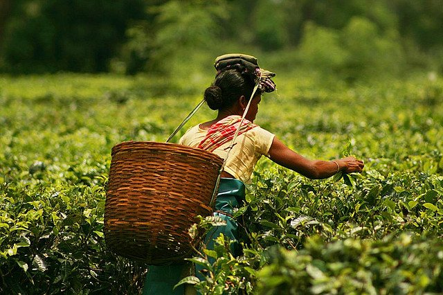
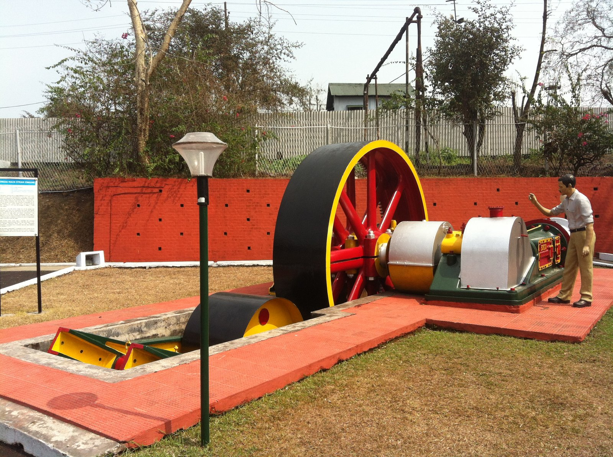

Indian Climate, Soils, Agriculture & Mineral Wealth
An exhaustive, high-yield visual guide to India's monsoon mechanism, local thunderstorm winds, ICAR 8 soil orders, agricultural cropping seasons, agricultural revolutions, and strategic mineral reserves (iron ore belts, Gondwana coal, Digboi oil, and uranium/thorium deposits) for UPSC, APSC & State PSC exams.
1. Climate of India & The Monsoon Mechanism
Tropical Monsoon Climate (Köppen Amw/Aw/Cwg) driven by differential heating and upper tropospheric jet streams

Southwest Monsoon Dynamics: Arabian Sea & Bay of Bengal Branches
The seasonal reversal of winds (Mausim) strikes the Kerala coast by June 1 and bifurcates into the Western Ghats orographic branch and the Bay of Bengal funnel branch hitting Mawsynram (1,187 cm).
Thermal Engine & ITCZ
Intense summer heating of Tibetan Plateau (~4,500 m) creates low pressure cell (Monsoon Trough). Shift of Inter-Tropical Convergence Zone (ITCZ) northwards to ~20°–25° N pulls SE Trade Winds across Equator, deflecting right as SW Monsoon (Coriolis Effect).
Somali Jet & TEJ
Low-level Findlater Jet (Somali Jet) off Horn of Africa accelerates moisture-laden winds towards Malabar coast. In upper atmosphere (~150 hPa), Tropical Easterly Jet (TEJ) over peninsular India establishes anti-cyclonic divergent outflow over Bay of Bengal.
ENSO & Indian Ocean Dipole
El Niño (warming of central/eastern equatorial Pacific) weakens Indian monsoon. La Niña brings heavy monsoon rains. Positive IOD (warmer western Indian Ocean) counters El Niño and boosts monsoon rainfall.
Western Disturbances
Extratropical cyclones originating over Mediterranean Sea steered by Subtropical Westerly Jet stream. Bring winter rain (Mahawat) to Punjab, Haryana, UP, and snowfall to J&K, HP, Uttarakhand—crucial for Rabi wheat crops.
Pre-Monsoon Hot Weather Thunderstorms & Local Winds (March–May)
Crucial for prelims match-the-following| Local Storm / Wind Name | Geographic Region | Meteorological Nature | Economic & Agricultural Significance |
|---|---|---|---|
| Kalbaisakhi (Nor'westers) | West Bengal & Odisha | Severe afternoon thunderstorms with violent squalls and torrential rain | Calamitous for crops/cattle, but extremely beneficial for early Jute and Aus Rice |
| Bardoli Chheerha | Assam & Brahmaputra Valley | Violent pre-monsoon squall storms moving from SW to NE | Critical for early budding and high yield in Assam Tea Gardens |
| Mango Showers | Kerala & Coastal Karnataka | Pre-monsoon light to moderate convective rains | Aids early ripening and harvesting of high-grade commercial mangoes |
| Cherry Blossom / Blossom Shower | Karnataka & Wayanad (Kerala) | Convective showers occurring in March–April | Triggers synchronous flowering and blossoming of Coffee plants |
| Loo | Northern Plains (Punjab to Bihar) | Extremely hot, dry, dust-laden westerly winds (45°C–50°C) during May–June | Causes severe sunstroke and dehydration; precedes dust storms (Andhi) |
| Retreating / NE Monsoon | Tamil Nadu (Coromandel Coast) | Winds blowing from land to sea; picks up moisture over Bay of Bengal | Gives ~50% of annual rainfall to coastal Tamil Nadu during October–December |
2. Soils of India: ICAR Classification & Distribution
Indian Council of Agricultural Research (ICAR) categorizes Indian soils into 8 major genetic groups
Alluvial Soils (Entisols / Inceptisols)
Deposited by Indus, Ganga, Brahmaputra & coastal deltas. Azonal, immature profile. Divided into Khadar (new, fertile, floodplains) and Bhangar (older, terrace, calcareous kankar nodules).
Black / Regur Soils (Black Cotton Soil)
Weathering of Deccan basalt trap (Maharashtra, Gujarat, MP, northern Karnataka). High clay fraction with Montmorillonite mineral. Highly moisture retentive; swells when wet and shrinks into deep cracks when dry (self-ploughing).
Red & Yellow Soils
Formed on Archean crystalline and metamorphic granites/gneisses under low rainfall (Tamil Nadu, Odisha, Chota Nagpur, NE hills). Red color due to ferric oxide diffusion; appears yellow when hydrated. Light texture, porous.
Laterite Soils
Formed in high temperature and alternating heavy rainfall/dry cycles (Western Ghats summits, Meghalaya plateau, Chota Nagpur). Extreme leaching (Laterization) washes out silica; leaves behind insoluble iron/aluminum oxides. Hardens like brick when exposed.
Sandy texture, alkaline, high soluble salt content. Deficient in moisture and humus. Found in Western Rajasthan, Haryana, Kutch. Responds to canal irrigation (Indira Gandhi Canal).
Contains excessive sodium, calcium, magnesium salts due to canal waterlogging, capillary action, and high evaporation. Reclaimed by adding Gypsum (CaSO₄·2H₂O) and growing dhaincha.
Formed in waterlogged, humid areas with heavy accumulation of organic matter (40–50% humus). Highly acidic, black color. Found in Kottayam/Alappuzha (Kuttanad submerged paddy), Sundarbans.
Found in Himalayan valleys and hill slopes with sufficient canopy cover. Immature, thin soil profile, acidic on steep slopes with low humus, but rich in humus in fertile valley bottoms. Supports apple, saffron, tea.
3. Natural Vegetation of India & Forest Survey (ISFR)
Champion and Seth Forest Classification & key findings of the Biennial India State of Forest Report (FSI Dehradun)
Tropical Evergreen & Semi-Evergreen
Rainfall >200 cm, temp ~25°C–27°C. Multi-layered canopy, no definite leaf-shedding season. Dense, luxuriant growth.
Tropical Deciduous (Monsoon Forests)
Most widespread (~65% of India's forest area). Shed leaves for 6–8 weeks in dry summer to conserve water.
Mangrove / Tidal Forests (Littoral)
Salt-tolerant halophytic vegetation growing in inter-tidal mudflats of river deltas. Feature breathing stilt roots (pneumatophores) and viviparous germination.
• Total Forest & Tree Cover: ~24.62% of geographical area (Target as per National Forest Policy 1988 is 33%).
• Largest Forest Area: 1st Madhya Pradesh, 2nd Arunachal Pradesh, 3rd Chhattisgarh.
• Highest Forest % of Total Area: Mizoram (~84.5%), Arunachal Pradesh (~79.3%), Meghalaya.
• Largest Mangrove Cover: West Bengal (Sundarbans ~42%), followed by Gujarat (~23%) and Andaman & Nicobar.
4. Indian Agriculture: Cropping Seasons & Agricultural Revolutions
Kharif, Rabi, Zaid calendars, major crop leaders, and milestone agricultural transformation programs

Commercial Plantation Agriculture: Tea, Coffee & Spices
India is the world's 2nd largest producer of tea (Assam leading) and grows premium shade-grown Arabica and Robusta coffee in Karnataka (Bababudan Hills, Coorg producing ~70%).
Agricultural Revolutions in India (Prelims High-Yield Matrix)
Key Architects & Target Sectors| Revolution | Associated Field / Produce | Pioneering Father / Key Program | Impact & Major States |
|---|---|---|---|
| Green Revolution | Food grains (Wheat & Rice) | World: Norman Borlaug; India: M.S. Swaminathan | HYV Mexican dwarf seeds, chemical fertilizers, irrigation in Punjab, Haryana, Western UP |
| White Revolution | Dairy & Milk Production | Dr. Verghese Kurien (Operation Flood, 1970) | Made India the world's #1 milk producer; founded NDDB & AMUL cooperative model |
| Yellow Revolution | Oilseeds (Mustard, Groundnut, Soybean) | Sam Pitroda (Technology Mission on Oilseeds 1986) | Rajasthan (Mustard), Gujarat (Groundnut), MP (Soybean) |
| Blue Revolution | Fisheries & Aquaculture | Dr. Hiralal Chaudhuri & Dr. Arun Krishnan | Inland & marine fisheries; Pradhan Mantri Matsya Sampada Yojana (PMMSY) |
| Golden Revolution | Horticulture, Honey & Fruits | Nirpakh Tutej (1991–2003) | India ranks 2nd in fruits & vegetables; Sweet Revolution (National Beekeeping Mission) |
| Silver Revolution | Eggs & Poultry Production | Spearheaded during Indira Gandhi administration | Andhra Pradesh & Tamil Nadu leading poultry production |
| Red Revolution | Meat & Tomato Production | Vishal Tewari | Rapid growth of processed tomato processing and meat exports |
| Pink Revolution | Onion, Pharmaceuticals & Prawn | Durgesh Patel | Nashik (Maharashtra) for onions; coastal brackish prawn aquaculture |
| Round Revolution | Potato Production | Central Potato Research Institute (CPRI, Shimla) | Uttar Pradesh leads in potato output (~35% of national production) |
5. Mineral Resources, Oilfields & Energy of India
Iron ore belts, Gondwana coal basins, offshore/onshore petroleum, and atomic minerals

Petroleum Pioneers: Assam Oilfields & Offshore Bombay High
India's petroleum geography spans the tertiary rocks of Assam (Digboi, Naharkatiya), Gujarat (Ankleshwar, Kalol), offshore Bombay High (discovered 1974 with Sagar Samrat rig), and the Barmer Basin (Rajasthan).
Indian Minerals: Types, Mining Belts & Leading States
UPSC / APSC Frequently Asked Facts| Mineral | Principal Ores / Types | Key Mining Centers & Belts | Leading Producing States |
|---|---|---|---|
| Iron Ore | Haematite (~70% Fe, red, Dharwar rocks) & Magnetite (72% Fe, black, magnetic) |
• Odisha-Jharkhand: Badampahar, Mayurbhanj, Keonjhar, Noamundi. • Durg-Bastar-Chandrapur: Bailadila (high-grade exported to Japan via Visakhapatnam port). • Bellary-Chitradurga: Kudremukh (100% export-oriented slurry pipeline to Mangalore). |
1st Odisha (~50%), 2nd Chhattisgarh, 3rd Karnataka |
| Coal |
Gondwana Coal (~98% reserves, 250 myo, Bituminous, low moisture, Damodar valley). Tertiary Coal (~2%, 15–50 myo, high sulphur, Assam/Meghalaya/J&K). Lignite: Brown coal at Neyveli (Tamil Nadu). |
• Raniganj (WB): Oldest coalfield in India (opened 1774). • Jharia (Jharkhand): Largest coking coal reserves. • Bokaro, Giridih, Singrauli (MP/UP), Talcher (Odisha), Korba (CG). |
Reserves: Jharkhand > Odisha > Chhattisgarh. Production: Odisha / Chhattisgarh leading |
| Bauxite | Hydrated Aluminum Oxide (weathering of laterite/clay rocks) |
• Panchpatmali & Koraput (Odisha - largest bauxite deposit). • Lohardaga & Palamu (Jharkhand); Maikala Range & Amarkantak (MP/CG). |
1st Odisha (>50% of total national output) |
| Copper | Chalcopyrite (CuFeS₂), Malachite; found in ancient metamorphic rocks |
• Malanjkhand (Balaghat district, MP - open cast copper mine). • Khetri (Jhunjhunu, Rajasthan - historic Harappan site). • Mosabani, Rakha, Ghatsila (Singhbhum, Jharkhand). |
1st Madhya Pradesh, 2nd Rajasthan, 3rd Jharkhand |
| Manganese | Pyrolusite & Psilomelane (essential for making steel alloy & bleaching powder) |
• Balaghat & Chhindwara (MP). • Nagpur & Bhandara (Maharashtra - MOIL headquarters). • Keonjhar & Sundergarh (Odisha). |
1st Madhya Pradesh, 2nd Maharashtra, 3rd Odisha |
| Mica | Muscovite (White Mica) & Phlogopite; supreme electrical insulator |
• Nellore Belt (Gudur, Andhra Pradesh). • Koderma (Jharkhand - world's historic "Mica Capital"). • Bhilwara & Beawar (Rajasthan). |
1st Andhra Pradesh (>70% production) |
| Gold | Native gold in quartz reef veins & placer alluvial sands |
• Kolar Gold Fields (KGF): Historic deep mine (now closed). • Hutti Gold Mines: Raichur, Karnataka (currently active). • Ramagiri (Anantapur, AP). |
Karnataka (>95% of national gold production) |
| Diamond | Pure crystalline carbon in volcanic Kimberlite pipes |
• Majhgawan Mine, Panna district (Madhya Pradesh - only mechanized diamond mine in India operated by NMDC). • Historic Golconda mines (source of Koh-i-Noor, Hope diamond). |
Madhya Pradesh (100% of national diamond production) |
| Atomic Minerals (Uranium & Thorium) |
Uranium: Pitchblende / Uraninite. Thorium: Monazite beach sand (Kerala coast). |
• Jaduguda, Narwapahar, Bhatin (Singhbhum, Jharkhand - UCIL mines). • Tummalapalle (YSR Kadapa, AP - huge uranium reserve in dolomitic limestone). • Monazite beach placers of Chavara/Alappuzha (Kerala) and Manavalakurichi (Tamil Nadu). |
Uranium: Andhra Pradesh & Jharkhand. Thorium: Kerala & Odisha beach placers |
Active Recall Flashcards (3D Flip)
Click any card to flip between Question and Prelims Answer
Prelims Self-Assessment Quiz
Test your command over monsoon mechanics, soil chemistry, agricultural revolutions, and mineral belts